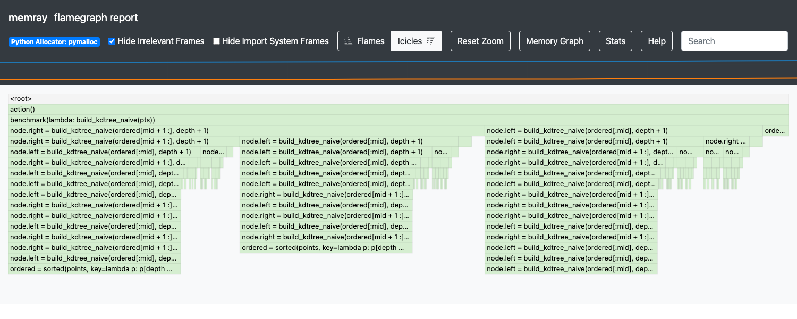
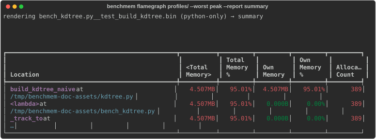

Find where memory goes¶
This is the heart of pytest-benchmem. A peak number tells you which benchmark is heavy, not where the memory goes — so keep the memray profile for it and render the allocating call paths. Now you know exactly what to optimize; change the code, re-run, and confirm the drop.
Keep a profile for the offenders¶
Add --benchmark-memory-profile DIR to keep the memray profile (.bin) for each regressing id:
pytest --benchmark-only --benchmark-memory \
--benchmark-memory-compare-fail=peak:10% \
--benchmark-memory-profile profiles/
# -> profiles/<id>.bin for every id over threshold; clean ids get nothing
The run prints a ready-to-paste command per saved profile:
benchmem: saved 1 memory profile(s) to profiles/ — render with:
memray flamegraph profiles/test_solve.bin
The .bin is memray's raw capture, so the same file also feeds memray tree / summary / stats
— pick the lens you want. Off by default (retaining .bins costs disk), and in CI it's the natural
artifact to upload and render locally on the PR.
Which benchmarks get a profile follows the gate:
- with
--benchmark-memory-compare-fail→ only the regressing ids (keep the failing run cheap and the output small); - without a fail-gate → every measured benchmark — drop the gate and keep
--benchmark-memory-profile DIRalone to archive them all, regressing or not.
One-step render — benchmem flamegraph¶
Instead of finding the right .bin and remembering the memray subcommand, point benchmem
flamegraph at the profile dir and name the test (an exact id or a unique substring):
benchmem flamegraph profiles/ test_solve # → profiles/test_solve.flamegraph.html
benchmem flamegraph profiles/ --worst peak --open # auto-pick the heaviest, open it
benchmem flamegraph profiles/ test_solve --report tree # terminal lens instead of HTML
--worst peak|allocated|allocations reads the metric straight from each .bin and renders the
heaviest, so you don't have to look up the id. --report passes through to any memray reporter
(flamegraph default, plus table / tree / summary / stats); HTML reports land next to the
.bin (override with -o, overwrite with -f).
A worked example — building a k-d tree¶
The captures below profile a real, tested function
(examples/kdtree.py):
building a 2-D k-d tree, which recursively splits points by alternating axes — the backbone of
nearest-neighbour search. The naive build commits a classic mistake: every node keeps a reference
to the whole sublist it was split from, so the finished tree retains O(n·log n) points instead
of O(n).
def build_kdtree_naive(points, depth=0):
if not points:
return None
ordered = sorted(points, key=lambda p: p[depth % 2])
mid = len(ordered) // 2
node = RegionNode(ordered[mid], ordered) # ← the leak: keeps the whole sublist alive
node.left = build_kdtree_naive(ordered[:mid], depth + 1)
node.right = build_kdtree_naive(ordered[mid + 1 :], depth + 1)
return node
Because the work is recursive, the flamegraph is a proper tree — every build_kdtree_naive frame
is a subtree, and the per-level sorted(...) and slice allocations are what pile up:

summary is the fastest read in the terminal — it ranks every frame by the memory it owns, so the
offender tops the Own Memory % column. Here build_kdtree_naive owns 95% of peak — the
retained sublists:

The fix keeps only the split point and its children — nothing else is retained:
def build_kdtree(points, depth=0):
if not points:
return None
ordered = sorted(points, key=lambda p: p[depth % 2])
mid = len(ordered) // 2
return Node(
ordered[mid],
build_kdtree(ordered[:mid], depth + 1),
build_kdtree(ordered[mid + 1 :], depth + 1),
)
Re-run and confirm the drop — peak falls by ~80% (the tree is back to O(n)),
and the test asserts both builds produce the identical tree.
Native-backed workloads: attribute the C/Rust memory¶
By default the capture records Python frames only. For a native-backed workload (polars/Rust,
numpy/C, solver bindings) the bulk of peak memory is allocated inside the extension, so the
flamegraph collapses it into one unresolved ??? at ??? bucket — exactly the part you wanted to
localize. Add --benchmark-memory-profile-native to also capture native stacks:
pytest --benchmark-only --benchmark-memory \
--benchmark-memory-profile profiles/ \
--benchmark-memory-profile-native
Now the flamegraph attributes memory to the real frames (e.g. jemalloc _rjem_je_* under rayon
workers, reached via the polars write path) instead of an opaque native bucket. It's opt-in —
native traces cost runtime and produce bigger .bins — and only applies on the
--benchmark-memory-profile path. Scope it to one test with
@pytest.mark.benchmem(profile_native=True) instead of the suite-wide flag; benchmem flamegraph
--native asserts a profile actually carries native traces and errors with the fix if it doesn't.
Symbols sharpen native frames
Native traces resolve against interpreter/library symbols. On a stripped build memray warns
No symbol information was found for the Python interpreter; frames then show as mangled
Rust/<unknown> but stay attributable by symbol name (_rjem_je_*, rayon_*). A debug-symbol
interpreter sharpens the picture.
Where to go next¶
- Set up the gate that flags the offenders → Catch regressions in CI
- See the before/after numbers that pointed here → Compare two runs